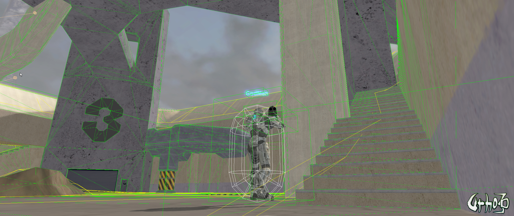

GodMan
Is it possible to use a custom mesh for navigation? Perhaps a simple built one in 3ds max, and use that instead.

Is it possible to use a custom mesh for navigation? Perhaps a simple built one in 3ds max, and use that instead.

It’s possible, sure, but not without modifying Urho3d. You’ll want to study up on the particulars of Detour’s internal structure. Take a look at the structures in https://github.com/recastnavigation/recastnavigation/blob/master/Detour/Include/DetourNavMesh.h for a look at the data you would have to build.

Yes, it’s entirely possible to hand a different mesh to Detour than you use for rendering. The same applies to physics shapes in general - it’s possible to use different meshes for rendering and physics, but the question I have to ask is why you would want to do this? Typically, we tend to use high-resolution meshes to generate our normal maps, which are then applied to a simplified version of the mesh for rendering purposes - if we want a simplified mesh for physics, and we can accept a simplified (but normal mapped) mesh for rendering, then we can likely use the same simplified mesh for both rendering and physics…
I need this because I have a map that the nav mesh generator makes some things apart of the nav mesh that don’t need to be. Besides making a simple mesh by hand and using that has more control.

I’m doing this all the time in my game and it is absolutely possible. Just be aware that the NavigationMesh and the detour crowd components have some issues when you keep rebuilding your navigation mesh on the fly. The DetourCrowd becomes invalid and will cause a crash. If you planning to constantly rebuild your levels your best bet is to remove both the detourCrowd and NavMesh components and create new ones each time you change the level.
I only need them created one time. Is this pretty straight forward? @Dave82
Do you use NavigationMesh::AddTile to build it? Seems like that should work, just looking at it quickly.
I don’t use AddTile . Maybe it is time to try that out. My procedure is
If i remove all the meshes at level end , and load new ones and then build my navMesh again the app will crash.(somewhere inside DetourCrowd… it need more investigation at this point but most likely it is a dangling pointer or a null pointer access)
Oh. I think OP is asking about using a nav mesh created externally, rather than one created using Build(). It seems like AddTile might do the trick, allowing one to build tiles by hand by encoding a byte stream. Would take a little doing, but might work.
Which ever is a better approach.
That’s certainly a valid point - in gamedev, and in general programming, there are usually multiple approaches to any given problem, and there is no hard and fast definition of “better”, because that term is subjective - what works best for you, in your project, in your situation, may not be “better” when applied in a different context. The only way to find out which approach is “your best fit” is to experiment! Ah, computer science, you are a real science after all.

…which is why it helps to formulate the goal you’re trying to achieve along with questions on how to pass any immediate hurdles you’re facing.


The problem I am having is if you notice on the stairs they nave mesh is actually slightly rotated. Also in the background if you see the yellow faces it makes walls part of the navmesh.
This seems indicative of a too-large cell size. Recast uses a volume array to build the mesh, and if the voxel size is too coarse it doesn’t fit the real mesh well. Experiment with smaller cell sizes until you strike a good balance between navmesh quality and how much time it takes to build.